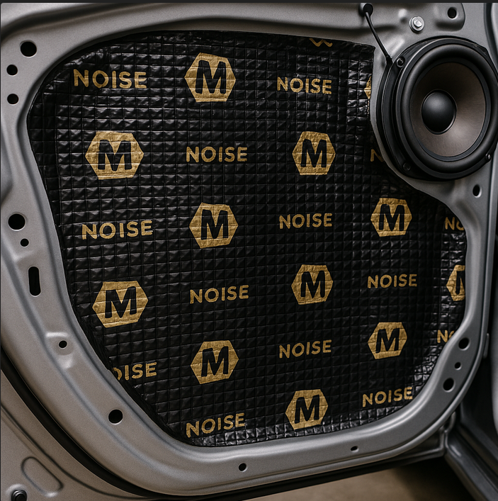

Sound Deadening & Rattles
Sound deadening is one of the most underrated and affordable upgrades in car audio. It can make your systems sound seem tighter, cleaner, and higher quality.
What Is Sound Deadening?
Sound deadening typically involves installing materials such as butyl mats, foam, or vinyl on the metal panels inside of vehicles. Typically it is installed underneath other trim pieces to hide the sound deadening in plain sight. These materials reduce vibrations and help control resonances that can cause buzzing or rattling that you might experience after installing an aftermarket setup.
The most common application areas include doors, trunk lids, rear decks, wheel wells, and any large metal panel near your subwoofers.
Benefits
- Reduces rattles and buzzing from panels.
- Makes bass feel tighter and more accurate.
- Can reduce road noise for a more comfortable quiet ride (until you start using the sound system).
Installation Tips
You do not have to cover every square inch of metal to get results. Focus first on thinner large panels that flex easily when applying pressure.
- Clean the surface to remove dust, grease, and loose debris that might interfear with adhesion.
- Cut deadening sheets into manageable pieces.
- Apply firmly and use a roller to press out air bubbles.
- Layer only where needed as the extra weight adds up quickly.
